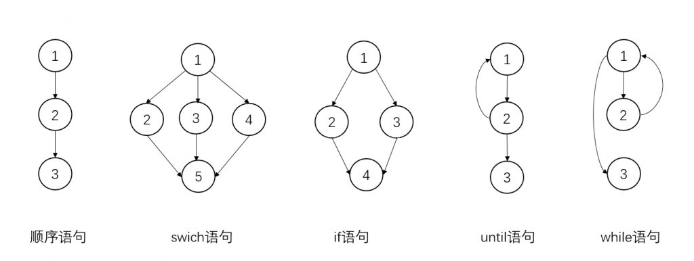

控制流图
定义
控制流图（control-flow graph）简称CFG，它使用数学中的图来表示计算机程序的执行流程。CFG中的每一个顶点对应一个程序基本块，基本块是一段中间不包含分支指令，但以分支指令结尾的代码块。CFG使用有向边来表示分支，在大多数情况下会有两个比较特殊的基本块，一个是开始块（entry block），另一个是结束块（exit block）。
可到达性
可到达性是图论中的性质，经常用在程序优化中，若某一个子图没有与包含开始块的子图相连接，那么称该子图为不可执行块，移除不可执行块不会对程序有任何影响，编译器中常见的死代码消除（dead code elimination）就是在做这件事。如果开始块执行不可到达结束块，那么程序有可能出现死循环。
支配关系
若从开始块到达基本块N的所有路径，都会在到达基本块N之前先到达基本块M，则基本块M支配（dominates）基本块N，记作M dom N。
从支配基本块N的所有块中去除基本块本身，其余的所有基本块都严格支配基本块N，记作M sdom N。
若基本块M支配基本块N，且其中间没有任何其他基本块，则基本块M直接支配（immediately dominates）基本块N，每个基本块都会有一个直接支配者，记作 M idom N。
与支配关系对应的还有后支配，即从N到控制流图结束块的所有路径均经过M，记作M pdom N。
支配树（dominator tree）是描述支配关系的数据结构。
规约性
常见分支语句的控制流图
如下图所示，其中until语句和do-while语句的控制流图相似：
